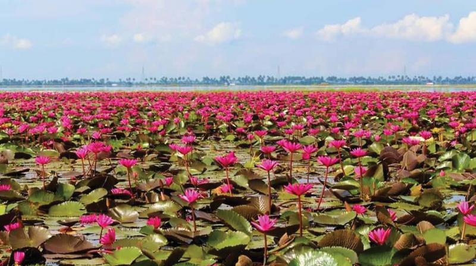

Malarikkal
Malarikkal is a small tourism hamlet located in Thiruvarpu panchayat in Kottayam town of Kerala, India. It is a rising tourist hotbed located in the southern tip of India.
Malarikkal is the most visited tourist destination in 2019.Blooming on fields after harvest, these radiant, pink water lilies appear on the backwaters of
Vembanad Lake sometime around September-October.
1 / 3

2 / 3

Ilaveezhapoonchira
Ilaveezhapoonchira is a tourist destination located in Melukavu village in Kottayam district near Kanjar. Ilaveezha Poonchira is surrounded by three enchanting hillocks - Mankunnu, Kodayathoormala and Thonippara. This makes the place ideal for trekking.
Ilaveezhapoonchira is a tourist destination located in Melukavu village in Kottayam district near Kanjar. Ilaveezha Poonchira is surrounded by three enchanting hillocks - Mankunnu, Kodayathoormala and Thonippara. This makes the place ideal for trekking.
3 / 3

Illikal Kallu
One of the most popular tourist destinations in Kottayam district is Illickal Kallu, situated on a majestic hill called Illickal Mala. There are numerous mountain streams in Illickal Mala, which is 6,000 ft above sea level, and they flow down to form the serene Meenachil River. Each of the three hills has a peculiar shape. One of them resembles a mushroom and hence, its name 'Kuda Kallu' (umbrella-shaped rock). The second hill has a small hunch on the side and is therefore called as 'Koonu Kallu' (hunchback rock). The third one is called Illickal Kallu as it derives its name from the mountain itself. The steep rock on the top of the hill has a part of its peak shorn off.
One of the most popular tourist destinations in Kottayam district is Illickal Kallu, situated on a majestic hill called Illickal Mala. There are numerous mountain streams in Illickal Mala, which is 6,000 ft above sea level, and they flow down to form the serene Meenachil River. Each of the three hills has a peculiar shape. One of them resembles a mushroom and hence, its name 'Kuda Kallu' (umbrella-shaped rock). The second hill has a small hunch on the side and is therefore called as 'Koonu Kallu' (hunchback rock). The third one is called Illickal Kallu as it derives its name from the mountain itself. The steep rock on the top of the hill has a part of its peak shorn off.